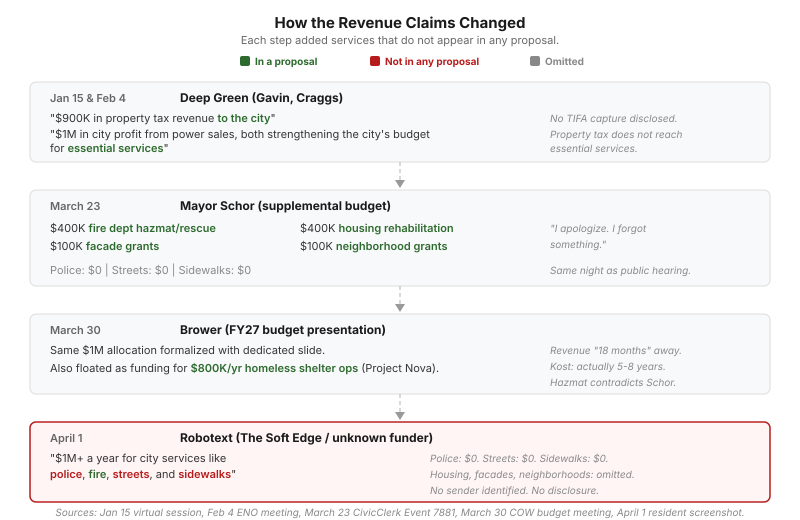

"Under Duress": Why Is Deep Green Revenue in the City Budget?
LANSING, Mich. — On March 23, at the same City Council meeting where the public hearing on the Deep Green data center took place, Mayor Andy Schor slipped a "supplemental budget" into his budget overview tying $1 million in firefighter equipment, housing rehabilitation, facade grants, and neighborhood grants to the project's approval. Council Member Ryan Kost, who says he has never seen a proposed project that hasn't been voted on already built into a city budget, called it a pressure tactic.
"I apologize. I forgot something."
Schor had just finished a $307 million budget overview covering new police, new firefighters, sidewalks, speed humps, and homeless shelter pods. He appeared to wrap up, and Council President Peter Spadafore began moving to the next agenda item before Schor interrupted.
I apologize. I forgot something. We also provided in the budget book a supplemental budget. If the data center were to pass, it would be a million dollars in return on equity.
Mayor Andy Schor, March 23 City Council meeting
The proposed allocation: $400,000 to the fire department for hazmat and specialized rescue gear, another $400,000 for housing rehabilitation, and $100,000 each for facade grants and neighborhood grants. Schor said the fire allocation was "a recommendation from the IAFF and I agree with it 100%." He described the facade and neighborhood grants as items "requested in Council's budget priorities, but we were not able to add to our budget this year."
The administration is telling council, plainly, that it cannot fund council's own priorities through normal revenue but could fund them if council approves the data center.
One week later, a dedicated budget slide
At the March 30 Committee of the Whole meeting, Chief Strategy Officer Jake Brower formalized the linkage in the official FY27 budget presentation. The data center revenue got its own slide. The $1 million comes from BWL's return on equity on power sales, a separate revenue stream from the ~$933K in property taxes that is largely captured by the Downtown TIFA before reaching any city service. Brower proposed a dedicated fund to track the spending separately from the general fund, and he floated the same $1 million as a potential source for the $800,000 annual operating gap in Project Nova, the city's planned homeless pod shelter.
Fire, housing, facade grants, neighborhood grants, and now homelessness services all appear in the budget as contingent on a data center vote that has not happened.
The hazmat contradiction
Council Member Deyanira Nevarez Martinez caught something at the March 30 meeting: the previous week, when Schor first introduced the supplemental budget, she had asked him whether the increased hazmat funding was because of the data center, and Schor said no.
But the budget document she received at the March 30 meeting listed the hazmat allocation as being for "chemicals used in data cooling systems for the data center." The data center's fuel cells are supplied by Bloom Energy, which the EPA fined $1.16 million for hazardous waste violations at its Delaware facility.
Last week when the mayor first spoke of the potential budget if the data center were to be put in, that there would be increased money for hazmat and I asked if it would be because of the data center. He said no, but in the budget here I see what was proposed: hazmat operations for chemicals used in data cooling systems for the data center.
Council Member Deyanira Nevarez Martinez, March 30 budget meeting
She pointed out that the data center would be "creating the need for itself," generating the hazmat risk and then taking credit for funding the mitigation out of its own revenue.
"I personally don't care for" tying needs to data center revenue
Council Vice President Trini Pehlivanoglu went further. She told the room she did not want to see tangible needs listed on page 22 of the budget handout tied to revenue from a project that had not been approved.
Regardless of whether we have a data center in this city or not, I would like to potentially see some of these items addressed within the normal budget analysis that we typically receive.
Council Vice President Trini Pehlivanoglu, March 30 budget meeting
She noted that a 27-story building is already under construction in Lansing, creating the need for high-angle rescue capability regardless of the data center. These are real needs that the budget presents as unfundable without Deep Green revenue.
When does the money actually arrive?
Council Member Ryan Kost asked Brower about the revenue timeline at the March 30 meeting. The data center revenue appeared in the FY27 budget, which starts July 1, 2026. Brower said it would take "up to about 18 months or so" after approval before the city sees the revenue, and that it was included as a "future allocation," not an appropriation.
The next day, Kost posted a public statement saying the 18-month figure "directly contradicts all previously presented timelines." He said the actual revenue timeline is five to eight years. Deep Green has never publicly stated how long construction will take. The buy-sell agreement requires groundbreaking within 24 months, which says nothing about when construction finishes or when the facility reaches the capacity needed to generate the projected revenue. A 24-megawatt data center with a custom 16-megawatt Bloom Energy fuel cell installation is not built in 18 months.
"Under duress"
Kost posted the full statement publicly.
I have not previously encountered a proposed project currently under council consideration already incorporated into the budget. Regardless of one's stance on the vote, this approach constituted a pressure tactic and was inappropriate.
Council Member Ryan Kost, Facebook, March 31, 2026
It is imperative that we allocate resources to essential areas such as housing support and appropriate firefighter equipment independently, rather than being compelled to approve a data center under duress.
Council Member Ryan Kost, Facebook, March 31, 2026
Three of seven council members have now publicly challenged the budget linkage: Nevarez Martinez with the hazmat contradiction, Pehlivanoglu with the decoupling demand, and Kost with the strongest language of the three.
How the claim changed

The pattern
The supplemental budget appeared the same night as the Deep Green public hearing, with spending categories chosen to make a "no" vote politically painful: firefighter safety, housing, neighborhoods, and then homelessness. Brower presented the revenue timeline as 18 months at the budget meeting, though Kost says the actual figure is five to eight years and that the 18-month claim contradicts every prior briefing. And the budget document tied the hazmat funding directly to data center chemicals, contradicting what the mayor told council verbally one week earlier.
Andy Schor told council he "forgot" to mention it. Should the council's vote on the data center determine whether Lansing firefighters get hazmat equipment?
Sources
March 23, 2026 City Council meeting, CivicClerk Event 7881 (Schor supplemental budget at 00:20:35). March 30, 2026 Special Committee of the Whole (Budget), YouTube (Brower budget overview, Nevarez Martinez hazmat question, Pehlivanoglu decoupling statement, Kost timeline question). Ryan Kost, public Facebook statement, March 31, 2026. Deep Green buy-sell agreement 24-month groundbreaking clause per CTO Matt Craggs, March 23 presentation. BWL return on equity is 6% of gross operating revenues, per the city-BWL contractual arrangement cited in the FY2026 General Fund Status Report.